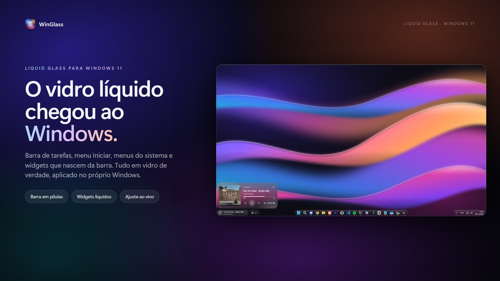
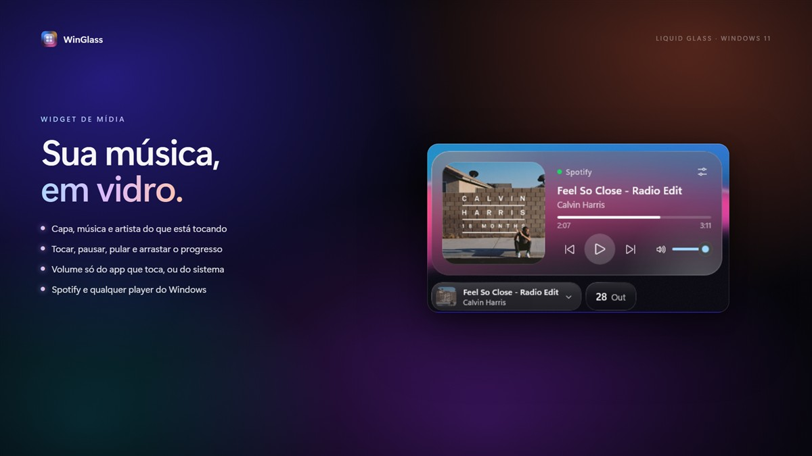
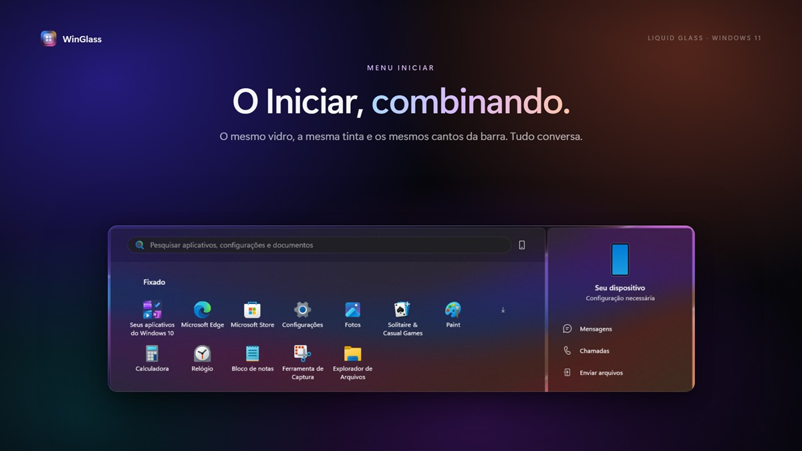
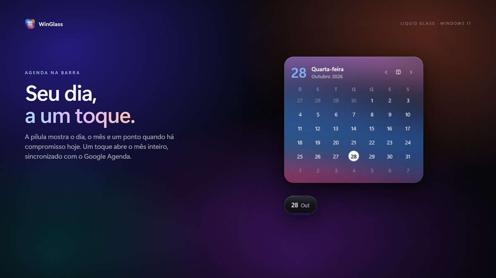

Liquid Glass · Windows 11
O Windows 11,
feito de vidro líquido.
O WinGlass aplica um efeito de vidro na barra de tarefas, no menu Iniciar e nos menus do sistema, e coloca widgets de vidro na barra: música, agenda, área de transferência e anotações.
Baixar na Microsoft StorePara Windows 11. Interface em português.

O que o WinGlass faz
Tudo roda no seu computador. Sem conta, sem anúncios, sem telemetria.
Vidro no sistema
Barra de tarefas, menu Iniciar, Configurações rápidas e notificações com desfoque, transparência e cor ajustáveis.
Barra em pílulas
A barra se divide em pílulas de vidro: widgets à esquerda, apps no meio e a bandeja à direita.
Widget de música
O que está tocando, com capa, progresso, volume e um mixer com o volume de cada app.
Agenda
O dia e o mês na barra e, num toque, os próximos eventos do seu Google Agenda (opcional).
Área de transferência
Os últimos textos e imagens copiados, para colar de novo com um clique.
Anotações rápidas
Um bloco de notas de vidro sempre à mão, salvo no próprio computador.


Widget de agenda e a sua conta Google
A agenda é opcional. Ela só se conecta ao Google quando você mesmo clica em “Conectar conta Google”.
Ao conectar, o WinGlass pede ao Google permissão somente de leitura para a sua agenda e usa esses dados apenas para mostrar o widget:
- lê a lista das suas agendas, para você escolher quais aparecem;
- lê os eventos do mês exibido e dos próximos dois meses (título, horário, local, cor e o link do evento), para mostrar o mês e a lista de próximos eventos;
- lê o seu endereço de e-mail, só para mostrar qual conta está conectada.
Os eventos ficam apenas na memória enquanto o widget está aberto. Nada é enviado a servidores do WinGlass (não existem), vendido ou compartilhado. Você pode desconectar quando quiser no próprio app ou em myaccount.google.com/permissions. Detalhes na política de privacidade.
